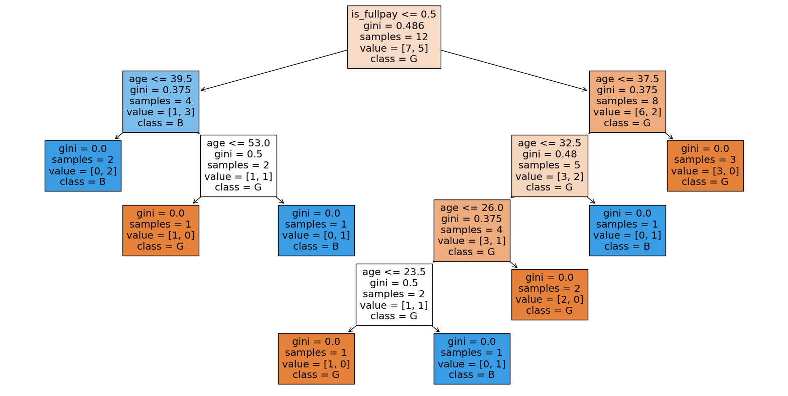
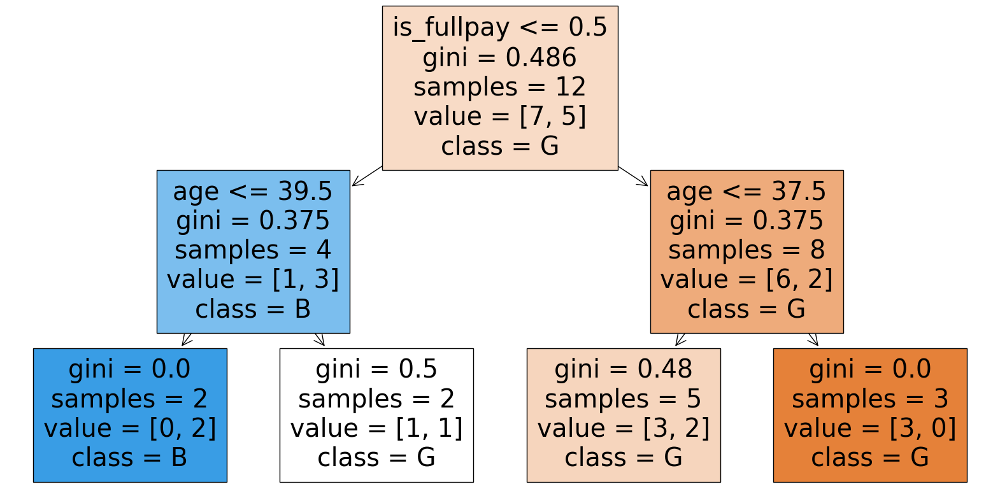
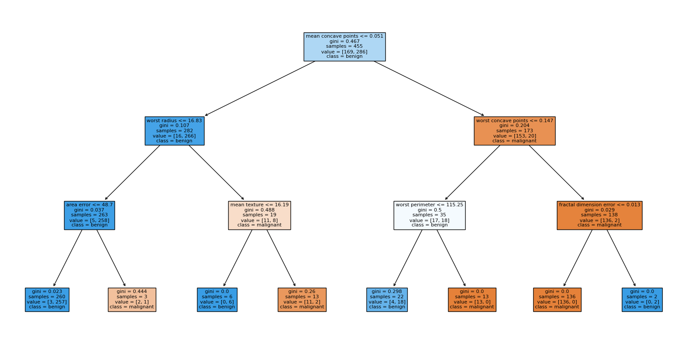
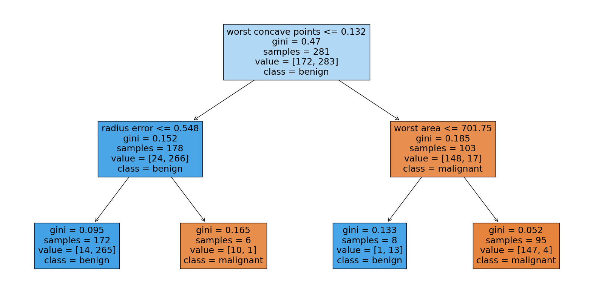
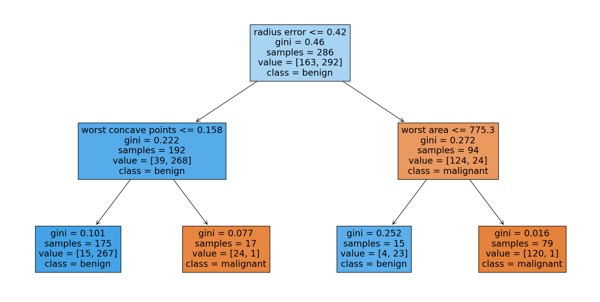
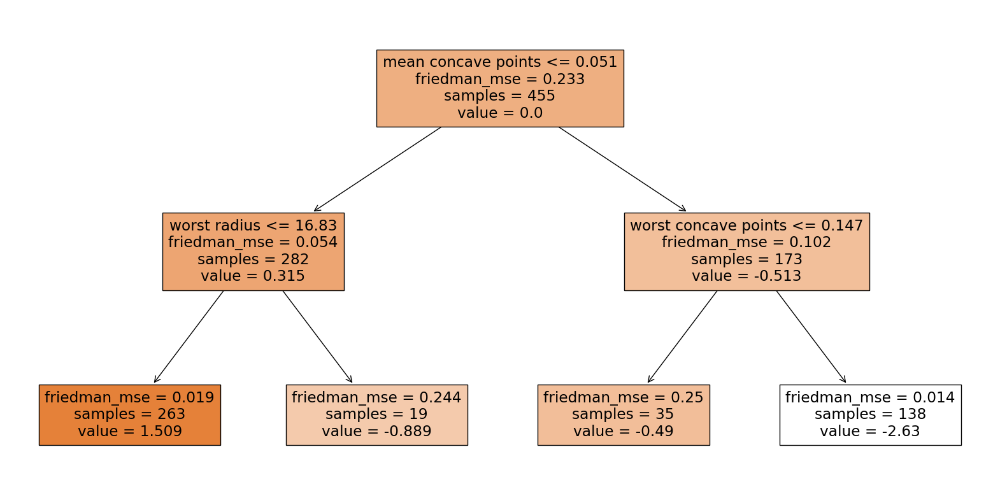
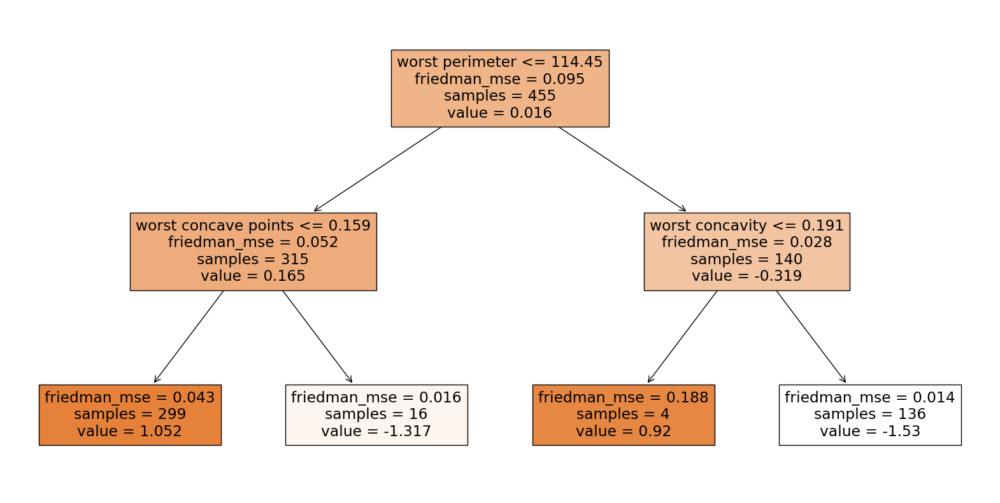
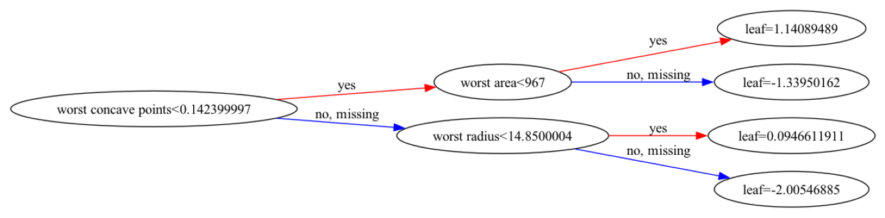
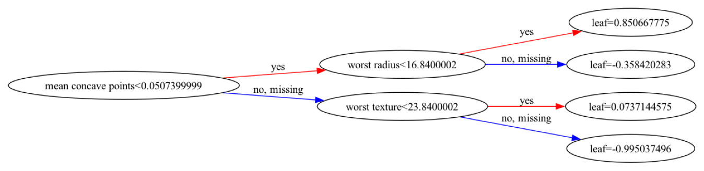

Tree-based models#
首先介紹Decision Tree演算法，接著再比較各種樹模型(random forest, gradient boost tree, xgboost)。
import matplotlib.pyplot as plt
import pandas as pd
from sklearn.datasets import load_breast_cancer
from sklearn.metrics import accuracy_score
from sklearn.metrics import precision_score
from sklearn.metrics import recall_score
from sklearn.metrics import f1_score
from sklearn.metrics import roc_auc_score
from sklearn.metrics import average_precision_score
from sklearn.metrics import confusion_matrix
from sklearn.model_selection import train_test_split
from sklearn.tree import DecisionTreeClassifier
from sklearn.ensemble import RandomForestClassifier
from sklearn.ensemble import GradientBoostingClassifier
from sklearn.tree import plot_tree
from sklearn.tree import export_graphviz
import graphviz
from xgboost import XGBClassifier
import xgboost as xgb
先用假造的簡單資料集如下：
data = pd.DataFrame({
'is_default': [0, 1, 1, 1, 0, 0, 0, 0, 1, 0, 0, 1],
'is_male': [1, 1, 1, 1, 1, 1, 0, 0, 0, 0, 0, 0],
'is_fullpay': [1, 1, 0, 0, 1, 1, 0, 1, 1, 1, 1, 0],
'age': [28, 33, 22, 30, 51, 47, 49, 32, 24, 23, 42, 57]
})
data
| is_default | is_male | is_fullpay | age | |
|---|---|---|---|---|
| 0 | 0 | 1 | 1 | 28 |
| 1 | 1 | 1 | 1 | 33 |
| 2 | 1 | 1 | 0 | 22 |
| 3 | 1 | 1 | 0 | 30 |
| 4 | 0 | 1 | 1 | 51 |
| 5 | 0 | 1 | 1 | 47 |
| 6 | 0 | 0 | 0 | 49 |
| 7 | 0 | 0 | 1 | 32 |
| 8 | 1 | 0 | 1 | 24 |
| 9 | 0 | 0 | 1 | 23 |
| 10 | 0 | 0 | 1 | 42 |
| 11 | 1 | 0 | 0 | 57 |
X, y = data[['is_male','is_fullpay', 'age']].values, data['is_default'].values
Decision Tree#
直接使用scikit-learn的DecisionTreeClassifier，並且超參數都使用預設值。
# Create a decision tree classifier
clf = DecisionTreeClassifier(random_state=42)
# Train the classifier on the training data
clf.fit(X, y)
DecisionTreeClassifier(random_state=42)In a Jupyter environment, please rerun this cell to show the HTML representation or trust the notebook.
On GitHub, the HTML representation is unable to render, please try loading this page with nbviewer.org.
DecisionTreeClassifier(random_state=42)
可以看到Decision Tree可以很複雜，幾乎切割到每片葉子的不純度皆為0。
# Plot the decision tree
plt.figure(figsize=(20,10))
plot_tree(clf, feature_names=['is_male','is_fullpay', 'age'], class_names=['G', 'B'], filled=True)
plt.show()

原因是超參數幾乎沒有對分割做限制，結果就是切割到不能再切為止。
clf.get_params()
{'ccp_alpha': 0.0,
'class_weight': None,
'criterion': 'gini',
'max_depth': None,
'max_features': None,
'max_leaf_nodes': None,
'min_impurity_decrease': 0.0,
'min_samples_leaf': 1,
'min_samples_split': 2,
'min_weight_fraction_leaf': 0.0,
'monotonic_cst': None,
'random_state': 42,
'splitter': 'best'}
嘗試加上分割限制，複雜度就降低很多了。
# Create a decision tree classifier
clf = DecisionTreeClassifier(min_samples_split=4, max_depth=2, random_state=42)
# Train the classifier on the training data
clf.fit(X, y)
DecisionTreeClassifier(max_depth=2, min_samples_split=4, random_state=42)In a Jupyter environment, please rerun this cell to show the HTML representation or trust the notebook.
On GitHub, the HTML representation is unable to render, please try loading this page with nbviewer.org.
DecisionTreeClassifier(max_depth=2, min_samples_split=4, random_state=42)
# Plot the decision tree
plt.figure(figsize=(20,10))
plot_tree(clf, feature_names=['is_male','is_fullpay', 'age'], class_names=['G', 'B'], filled=True)
plt.show()

接著，使用跟上一份logistic regression一樣的資料集：breast cancer。
# Load the breast cancer dataset
cancer = load_breast_cancer()
X, y = cancer.data, cancer.target
X_train, X_test, y_train, y_test = train_test_split(X, y, test_size=0.2, random_state=42)
# Create a decision tree classifier
clf = DecisionTreeClassifier(random_state=42)
# Train the classifier on the training data
clf.fit(X_train, y_train)
DecisionTreeClassifier(random_state=42)In a Jupyter environment, please rerun this cell to show the HTML representation or trust the notebook.
On GitHub, the HTML representation is unable to render, please try loading this page with nbviewer.org.
DecisionTreeClassifier(random_state=42)
# Create a decision tree classifier
clf = DecisionTreeClassifier(max_depth=3, random_state=42)
# Train the classifier on the training data
clf.fit(X_train, y_train)
DecisionTreeClassifier(max_depth=3, random_state=42)In a Jupyter environment, please rerun this cell to show the HTML representation or trust the notebook.
On GitHub, the HTML representation is unable to render, please try loading this page with nbviewer.org.
DecisionTreeClassifier(max_depth=3, random_state=42)
# Predictions on the test set
y_pred = clf.predict(X_test)
# Generate the confusion matrix
cm = confusion_matrix(y_test, y_pred)
# Convert the confusion matrix array into a pandas DataFrame
cm_df = pd.DataFrame(cm.T, index=['Predicted 0', 'Predicted 1'], columns=['Actual 0', 'Actual 1'])
# Display the confusion matrix as a table
print("Confusion Matrix:")
print(cm_df)
Confusion Matrix:
Actual 0 Actual 1
Predicted 0 39 2
Predicted 1 4 69
# Calculate metrics
accuracy = accuracy_score(y_test, y_pred)
precision = precision_score(y_test, y_pred)
recall = recall_score(y_test, y_pred)
f1 = f1_score(y_test, y_pred)
# Print metrics
print("Accuracy:", accuracy)
print("Precision:", precision)
print("Recall:", recall)
print("F1 Score:", f1)
Accuracy: 0.9473684210526315
Precision: 0.9452054794520548
Recall: 0.971830985915493
F1 Score: 0.9583333333333334
# Plot the decision tree
plt.figure(figsize=(20,10))
plot_tree(clf, feature_names=cancer.feature_names, class_names=cancer.target_names, filled=True)
plt.show()

Random Forest#
# Create a Random Forest classifier
rf_clf = RandomForestClassifier(n_estimators=30, max_depth=2, random_state=42)
# Train the classifier on the training data
rf_clf.fit(X_train, y_train)
RandomForestClassifier(max_depth=2, n_estimators=30, random_state=42)In a Jupyter environment, please rerun this cell to show the HTML representation or trust the notebook.
On GitHub, the HTML representation is unable to render, please try loading this page with nbviewer.org.
RandomForestClassifier(max_depth=2, n_estimators=30, random_state=42)
# Predictions on the test set
y_pred = rf_clf.predict(X_test)
# Generate the confusion matrix
cm = confusion_matrix(y_test, y_pred)
# Convert the confusion matrix array into a pandas DataFrame
cm_df = pd.DataFrame(cm.T, index=['Predicted 0', 'Predicted 1'], columns=['Actual 0', 'Actual 1'])
# Display the confusion matrix as a table
print("Confusion Matrix:")
print(cm_df)
Confusion Matrix:
Actual 0 Actual 1
Predicted 0 39 1
Predicted 1 4 70
# Calculate metrics
accuracy = accuracy_score(y_test, y_pred)
precision = precision_score(y_test, y_pred)
recall = recall_score(y_test, y_pred)
f1 = f1_score(y_test, y_pred)
# Print metrics
print("Accuracy:", accuracy)
print("Precision:", precision)
print("Recall:", recall)
print("F1 Score:", f1)
Accuracy: 0.956140350877193
Precision: 0.9459459459459459
Recall: 0.9859154929577465
F1 Score: 0.9655172413793104
# Extract a single decision tree from the Random Forest
estimator = rf_clf.estimators_[0]
# Plot the decision tree
plt.figure(figsize=(20,10))
plot_tree(estimator, feature_names=cancer.feature_names, class_names=cancer.target_names, filled=True)
plt.show()

# Extract a single decision tree from the Random Forest
estimator = rf_clf.estimators_[1]
# Plot the decision tree
plt.figure(figsize=(20,10))
plot_tree(estimator, feature_names=cancer.feature_names, class_names=cancer.target_names, filled=True)
plt.show()

Gradient Boost Tree#
# Create a Gradient Boosting Classifier
gb_clf = GradientBoostingClassifier(n_estimators=30, max_depth=2, learning_rate=0.5, random_state=42)
# Train the classifier on the training data
gb_clf.fit(X_train, y_train)
GradientBoostingClassifier(learning_rate=0.5, max_depth=2, n_estimators=30,
random_state=42)In a Jupyter environment, please rerun this cell to show the HTML representation or trust the notebook. On GitHub, the HTML representation is unable to render, please try loading this page with nbviewer.org.
GradientBoostingClassifier(learning_rate=0.5, max_depth=2, n_estimators=30,
random_state=42)# Predictions on the test set
y_pred = gb_clf.predict(X_test)
# Generate the confusion matrix
cm = confusion_matrix(y_test, y_pred)
# Convert the confusion matrix array into a pandas DataFrame
cm_df = pd.DataFrame(cm.T, index=['Predicted 0', 'Predicted 1'], columns=['Actual 0', 'Actual 1'])
# Display the confusion matrix as a table
print("Confusion Matrix:")
print(cm_df)
Confusion Matrix:
Actual 0 Actual 1
Predicted 0 40 1
Predicted 1 3 70
# Calculate metrics
accuracy = accuracy_score(y_test, y_pred)
precision = precision_score(y_test, y_pred)
recall = recall_score(y_test, y_pred)
f1 = f1_score(y_test, y_pred)
# Print metrics
print("Accuracy:", accuracy)
print("Precision:", precision)
print("Recall:", recall)
print("F1 Score:", f1)
Accuracy: 0.9649122807017544
Precision: 0.958904109589041
Recall: 0.9859154929577465
F1 Score: 0.9722222222222222
# Plot the decision tree
plt.figure(figsize=(20,10))
plot_tree(gb_clf.estimators_[0][0], feature_names=cancer.feature_names, class_names=cancer.target_names, filled=True)
plt.show()

# Plot the decision tree
plt.figure(figsize=(20,10))
plot_tree(gb_clf.estimators_[1][0], feature_names=cancer.feature_names, class_names=cancer.target_names, filled=True)
plt.show()

XGBoost#
xgboost 是實現 gradient boosting 演算法的一個套件，其中細節有些不同，並且做了一些工程上的優化。
因為繪圖所需，這邊另外建一個有包含欄位名稱的DataFrame。
X_train_xgb = pd.DataFrame(X_train, columns=cancer.feature_names)
# XGBoost Classifier
xgb_clf = XGBClassifier(n_estimators=30, max_depth=2, learning_rate=0.8, random_state=42)
xgb_clf.fit(X_train_xgb, y_train)
XGBClassifier(base_score=None, booster=None, callbacks=None,
colsample_bylevel=None, colsample_bynode=None,
colsample_bytree=None, device=None, early_stopping_rounds=None,
enable_categorical=False, eval_metric=None, feature_types=None,
gamma=None, grow_policy=None, importance_type=None,
interaction_constraints=None, learning_rate=0.8, max_bin=None,
max_cat_threshold=None, max_cat_to_onehot=None,
max_delta_step=None, max_depth=2, max_leaves=None,
min_child_weight=None, missing=nan, monotone_constraints=None,
multi_strategy=None, n_estimators=30, n_jobs=None,
num_parallel_tree=None, random_state=42, ...)In a Jupyter environment, please rerun this cell to show the HTML representation or trust the notebook. On GitHub, the HTML representation is unable to render, please try loading this page with nbviewer.org.
XGBClassifier(base_score=None, booster=None, callbacks=None,
colsample_bylevel=None, colsample_bynode=None,
colsample_bytree=None, device=None, early_stopping_rounds=None,
enable_categorical=False, eval_metric=None, feature_types=None,
gamma=None, grow_policy=None, importance_type=None,
interaction_constraints=None, learning_rate=0.8, max_bin=None,
max_cat_threshold=None, max_cat_to_onehot=None,
max_delta_step=None, max_depth=2, max_leaves=None,
min_child_weight=None, missing=nan, monotone_constraints=None,
multi_strategy=None, n_estimators=30, n_jobs=None,
num_parallel_tree=None, random_state=42, ...)# Predictions on the test set
y_pred = xgb_clf.predict(X_test)
# Generate the confusion matrix
cm = confusion_matrix(y_test, y_pred)
# Convert the confusion matrix array into a pandas DataFrame
cm_df = pd.DataFrame(cm.T, index=['Predicted 0', 'Predicted 1'], columns=['Actual 0', 'Actual 1'])
# Display the confusion matrix as a table
print("Confusion Matrix:")
print(cm_df)
Confusion Matrix:
Actual 0 Actual 1
Predicted 0 41 2
Predicted 1 2 69
# Calculate metrics
accuracy = accuracy_score(y_test, y_pred)
precision = precision_score(y_test, y_pred)
recall = recall_score(y_test, y_pred)
f1 = f1_score(y_test, y_pred)
# Print metrics
print("Accuracy:", accuracy)
print("Precision:", precision)
print("Recall:", recall)
print("F1 Score:", f1)
Accuracy: 0.9649122807017544
Precision: 0.971830985915493
Recall: 0.971830985915493
F1 Score: 0.971830985915493
i = 0
xgb.plot_tree(xgb_clf, num_trees=i, rankdir='LR')
fig = plt.gcf()
fig.set_size_inches(24, 4)

i = 1
xgb.plot_tree(xgb_clf, num_trees=i, rankdir='LR')
fig = plt.gcf()
fig.set_size_inches(24, 4)
